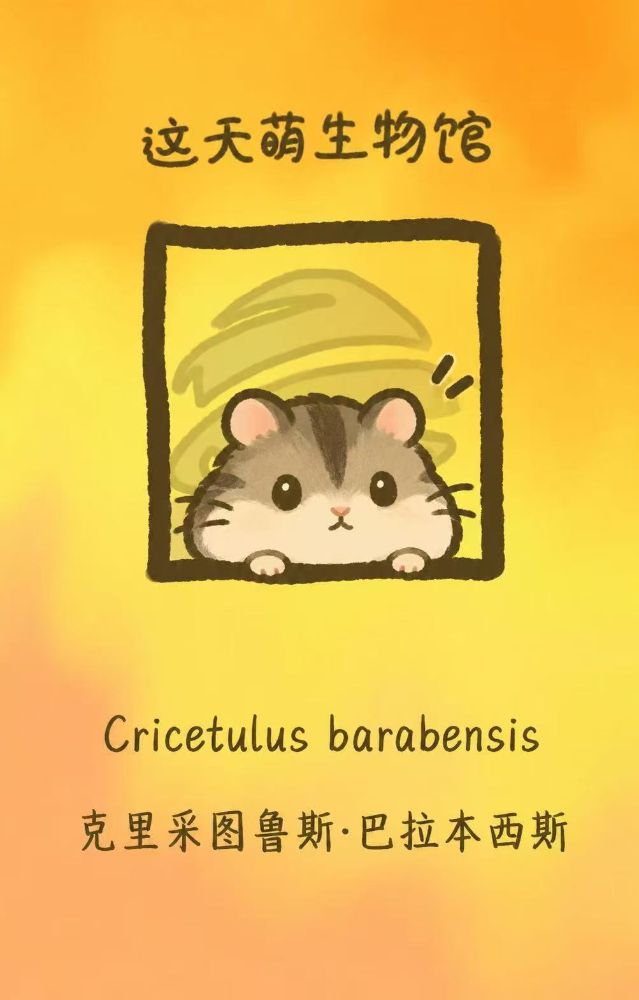

2023.09—2027.06
杭州师范大学地理信息科学本科在读
- 主修课程：人文地理学、自然地理学、遥感程序设计、地理信息系统设计与开发、地理教学论、心理学基础等
- 在校同时深耕 GIS 软件开发、遥感应用 与 地理教育 三个方向，并以浙江省天文学会、杭州市天文学会为依托开展天文科普实践
地理信息科学·GIS 与遥感·地理教育·天文科普
杭州师范大学 Hangzhou Normal University ·地理信息科学 Geography Information Science 2023 — 2027

Ecological potential–productivity mismatch in complex-terrain cities: NPP dynamics within TARSEI-derived high-potential areas in Hangzhou, China
人工智能支持下的高中地理交互式网页学习平台开发与教学设计研究